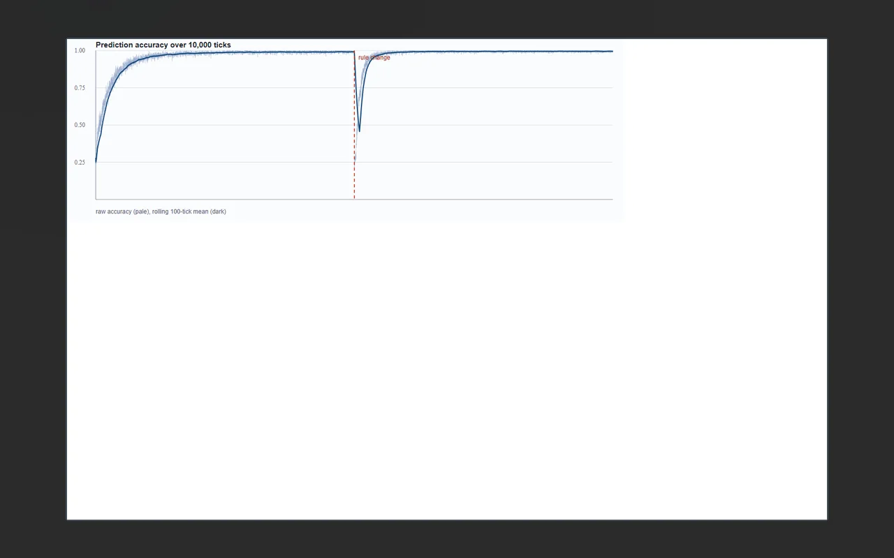
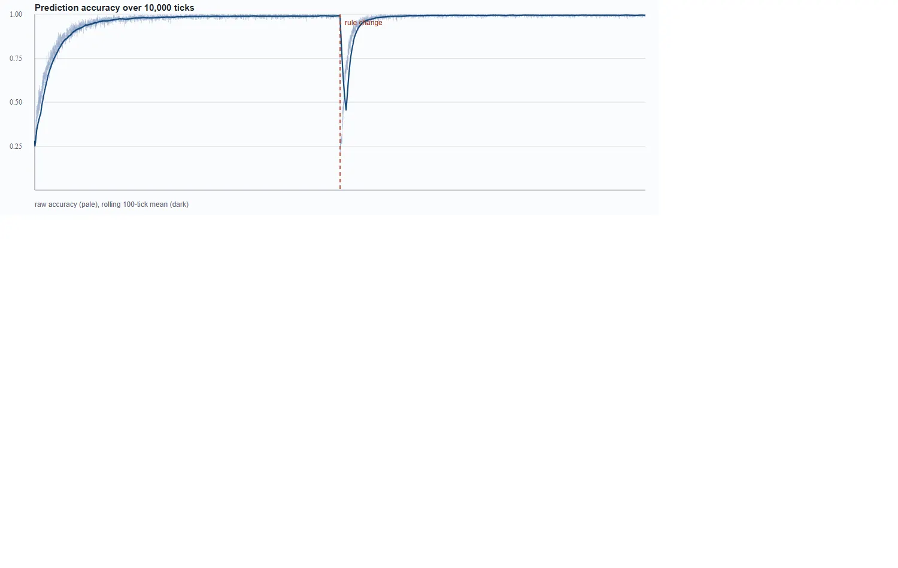

AI RESEARCH
CoreMind
World-model ideas tested in a small environment.
ORIGINAL PROJECT MATERIAL

Actual experiment output, not an app screenshotNOT A GENERATED UI MOCKUP
01 / Overview
What is CoreMind?
CoreMind is a world-model and agent-embodiment research prototype.
A research sandbox exploring sensory signals, simulated motor control, memory and measured experiments.
02 / Inside the project
What it actually does.
- Experiment with synthetic body and motor channels.
- Test perception, episodic memory, and state tracking.
- Run controlled simulation and behavior experiments.
How it works
The source describes a small simulated environment with body control, sensory signals, episode memory and behavior experiments. Separate runs collect plots to compare particular learning or control variants. It is experimental work, not a finished general agent.
03 / Real material
Watch it. Inspect it.
A genuine experiment-curve image is included as research output. There is no verified standalone product demo.


Scope note. Research prototypes do not demonstrate generally intelligent autonomous behavior.